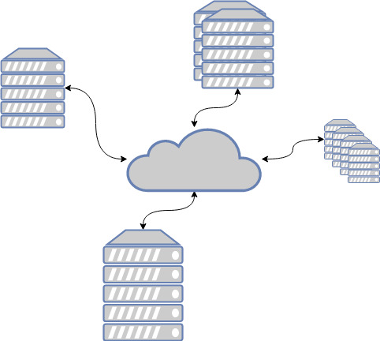

Registro Nacional de Trámites
Objetivos
-
Diseminar la información para el cumplimiento de la regulación (transparencia).
-
Reducir los costos administrativos en las transacciones entre el ciudadano y el
gobierno
-
Otorgar certeza jurídica en la aplicación de la regulación
Orientación al usuario
- Ciudadanía
- Funcionarios públicos
- Sistemas institucionales
Interoperabilidad

Mobile first
"95 % de los usuarios de Redes
Sociales en Centroamérica lo consideran su principal dispositivo de conexión a la
red."
Datos iLifebelt 2018.